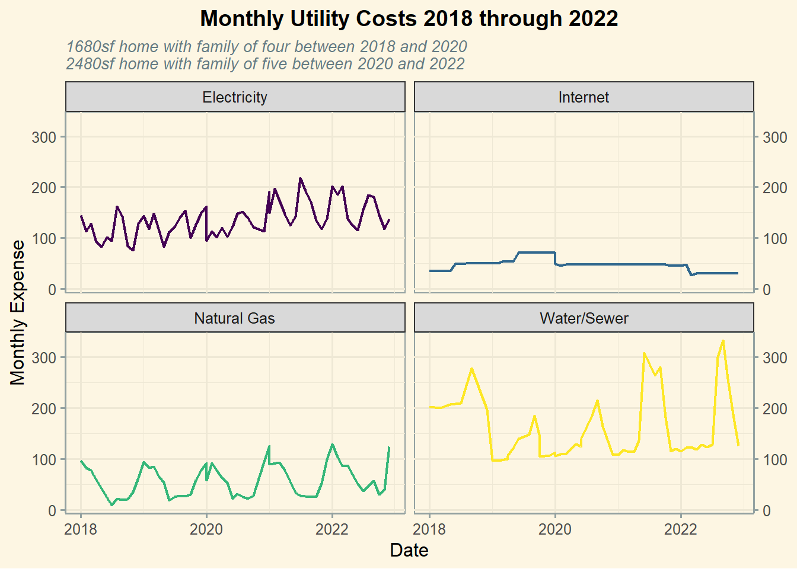

Attaching package: 'plotly'
The following object is masked from 'package:ggplot2':
last_plot
The following object is masked from 'package:stats':
filter
The following object is masked from 'package:graphics':
layout
# Read in datautilities<-read.csv("..\\..\\data\\utilities.csv")%>%rename("Desc"="Description.of.transaction")#convert Date to date formatutilities$Date<-mdy(utilities$Date)# Breaking out month and yearutilities<-utilities%>%mutate(yr_month =as.Date(cut(Date, breaks ="month")))%>%mutate(year =as.Date(cut(Date, breaks ="year")))%>%filter(Date<"2023/01/01")# Removing unneeded columnsutilities<-utilities%>%filter(Desc!="Car Insurance"&Desc!="Trash")
monthly2<-monthly+theme_solarized()+labs(title ="Monthly Utility Costs 2018 through 2022", subtitle ="1680sf home with family of four between 2018 and 2020\n2480sf home with family of five between 2020 and 2022", x ="Date", y ="Monthly Expense", color ="Utility Type")+theme(plot.title =element_text(hjust =0.5, size =14, face ='bold', color ='black'), plot.subtitle =element_text(size =10, face ='italic'), axis.title.x =element_text(color ='black'), axis.title.y =element_text(color ='black'), legend.position ="none")+scale_y_continuous(sec.axis =sec_axis(~.))+scale_color_viridis(discrete =TRUE)monthly2

Converting to plotly
Code
ggmonthly<-ggplotly(monthly2)%>%layout(title =list(y =.95, xref ="plot"), margin =list(l =75, t =75, b =75, r =50))ggmonthly